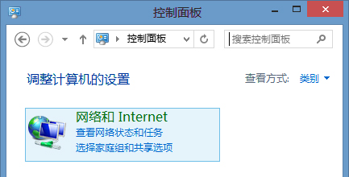

点击桌面左下角的 [开始]按钮，打开 [控制面板]，查看方式为类别，点击 [网络和Internet]，再进入[网络和共享中心]。
点击[更改适配器设置]
右键点击当前活动的网络连接，点弹出菜单中的[属性]
选择[Internet 协议版本 4 (TCP/IPv4)]，再点击[属性]
选择 [使用下面的DNS服务器地址]，输入[首选 DNS服务器为 8.8.8.8]和[备用DNS服务器为8.8.4.4]，然后点击[确定]。
注：若完成手动修复本地DNS后仍无法解决问题，您可以参阅以下链接：https://support.microsoft.com/zh-cn/kb/972034